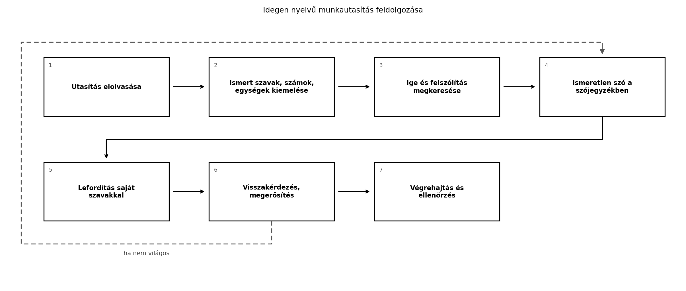

Egy budapesti pékségbe új, német gyártmányú osztó-gömbölyítő gép érkezik; a gépkönyv rövid kezelési útmutatója angolul és németül van. A nyári szezonban egy osztrák pékség is keres segítő péket, és az álláshirdetés német nyelvű űrlapot kér. A pékségben pedig dolgozik egy kolléga, aki angolul ért a legjobban. Ha a pék megérti az egyszerű idegen nyelvű utasítást, biztonságosabban és gyorsabban dolgozik; ha félreérti, hibás termék vagy baleset lehet a következmény.
Ez az alfejezet nem nyelvtanfolyam: a pék szakma szakmai minimumát adja angolul és németül. Rendszerezed a legfontosabb igeidőket és mondatformákat, megtanulod a pékségi szókincs alapjait, bemutatkozol, kitöltesz egy űrlapot, és megérted a rövid munkautasításokat. Az előző, Álláskeresés és munkanélküliség alfejezet bemutatkozási és interjúszerkezetét most idegen nyelven használod.

Egy példa: „Knead the dough for 4 minutes on speed 1, then 6 minutes on speed 2.” A számok és egységek (4 minutes, 6 minutes, speed 1, speed 2) már elárulják a lényeget; az ige (knead = dagaszt) és a tárgy (the dough = a tésztát) kiegészíti. Jelentése: „Dagaszd a tésztát 4 percig 1-es fokozaton, majd 6 percig 2-es fokozaton.”
Definíció. Szakszókincs: egy szakma sajátos szavai és kifejezései (nyersanyagok, műveletek, gépek, mértékegységek), amelyeket a munkahelyi kommunikációban pontos jelentéssel használunk.
Definíció. Munkautasítás (angolul work instruction, németül die Arbeitsanweisung): rövid, egyértelmű leírás arról, mit, milyen sorrendben, milyen paraméterekkel kell elvégezni. Leggyakrabban felszólító módban áll.
Definíció. Felszólító mód (angolul imperative, németül der Imperativ): az utasítás igealakja. Angolul az ige alapalakja alany nélkül: Mix. Weigh the flour. Németül munkahelyi utasításban gyakran a magázó forma: Wiegen Sie das Mehl ab. (Mérje le a lisztet.)
| Idő | Angol példa | Német példa | Magyar |
|---|---|---|---|
| Jelen | I bake bread every day. | Ich backe jeden Tag Brot. | Minden nap kenyeret sütök. |
| Folyamatos jelen | I am mixing the dough now. | Ich knete gerade den Teig. | Most dagasztom a tésztát. |
| Múlt | I baked 200 rolls yesterday. | Ich habe gestern 200 Brötchen gebacken. | Tegnap 200 zsemlét sütöttem. |
| Jövő | I will start at 3 a.m. tomorrow. | Ich fange morgen um 3 Uhr an. | Holnap hajnali 3-kor kezdek. |
Megjegyzés. Németül a beszélt nyelvben a múltat többnyire a Perfekt fejezi ki (habe … gebacken), a jövőt gyakran a jelen idő és egy időhatározó (morgen). A werden segédigés jövő (Ich werde morgen anfangen.) is helyes.
| Jelentés | Angol | Német | Pékségi példa (angol / német) |
|---|---|---|---|
| kell | must / have to | müssen | You must wash your hands. / Sie müssen sich die Hände waschen. |
| tud, szabad | can | können / dürfen | Can you use the slicer? / Dürfen Sie die Schneidemaschine bedienen? |
| tilos | must not | nicht dürfen | You must not open the guard. / Sie dürfen die Schutzabdeckung nicht öffnen. |
| ajánlott | should | sollte (sollen) | You should check the temperature. / Sie sollten die Temperatur prüfen. |
Figyelem. A must not jelentése „tilos”, nem „nem kell”. A „nem kell” angolul do not have to, németül nicht müssen. Biztonsági utasításban ez a különbség döntő!
| Magyar | Angol | Német |
|---|---|---|
| liszt | flour | das Mehl |
| búzaliszt / rozsliszt | wheat flour / rye flour | das Weizenmehl / das Roggenmehl |
| víz | water | das Wasser |
| élesztő | yeast | die Hefe |
| só | salt | das Salz |
| cukor | sugar | der Zucker |
| vaj / margarin | butter / margarine | die Butter / die Margarine |
| tojás | egg | das Ei (die Eier) |
| tej | milk | die Milch |
| kovász | sourdough | der Sauerteig |
| szezámmag / dió | sesame seeds / walnuts | der Sesam / die Walnüsse |
| Magyar | Angol | Német |
|---|---|---|
| lemér | to weigh | abwiegen |
| összekever | to mix | mischen / vermengen |
| dagaszt | to knead | kneten |
| oszt (darabol) | to divide | teilen / abteilen |
| gömbölyít | to round | rundwirken / schleifen |
| alakít | to shape | formen / wirken |
| keleszt | to proof (to prove) | gehen lassen |
| bevág | to score | einschneiden |
| süt | to bake | backen |
| hűt | to cool | abkühlen |
| Magyar | Angol | Német |
|---|---|---|
| dagasztógép (spirál) | (spiral) mixer | die (Spiral-)Knetmaschine |
| osztó-gömbölyítő | divider-rounder | die Teigteil- und Rundwirkmaschine |
| nyújtógép | sheeter | die Ausrollmaschine |
| kelesztőszekrény | proofer, proving cabinet | der Gärschrank |
| kemence (etázs / kocsis) | oven (deck / rack) | der Ofen (Etagenofen / Stikkenofen) |
| szeletelőgép | bread slicer | die Brotschneidemaschine |
| vészleállító | emergency stop | der Not-Halt (Not-Aus) |
| védőburkolat | guard | die Schutzabdeckung |
| hűtőkamra | cold room | der Kühlraum |
Allergén. Az allergénjelölés kifejezései (lásd Allergének kezelése a pékségben): angolul contains: wheat (gluten), milk, egg, sesame; may contain traces of nuts. Németül: enthält: Weizen (Gluten), Milch, Ei, Sesam; kann Spuren von Schalenfrüchten enthalten. Az uniós jelölési szabály minden tagállamban ugyanaz, de a pontos jelölést a gyártmánylap határozza meg (ellenőrizendő: 1169/2011/EU rendelet).
Angol: My name is Bence Kovács. I am 19 years old and I live in Szeged. I am a trained baker. I worked in a small bakery for one year. I can make sourdough bread, rolls and croissants. I usually start work at 3 a.m. I speak Hungarian and some English.
Német: Ich heiße Bence Kovács. Ich bin 19 Jahre alt und wohne in Szeged. Ich bin gelernter Bäcker. Ich habe ein Jahr in einer kleinen Bäckerei gearbeitet. Ich kann Sauerteigbrot, Brötchen und Croissants backen. Normalerweise fange ich um 3 Uhr morgens an. Ich spreche Ungarisch und ein bisschen Deutsch.
Egy jelentkezési vagy személyi adatlap szinte mindig ugyanazokat a mezőket kéri:
| Magyar | Angol | Német |
|---|---|---|
| vezetéknév | surname / last name | der Nachname |
| keresztnév | first name | der Vorname |
| születési dátum | date of birth | das Geburtsdatum |
| állampolgárság | nationality | die Staatsangehörigkeit |
| lakcím | address | die Adresse (die Anschrift) |
| végzettség | qualification | die Ausbildung / der Abschluss |
| nyelvtudás | language skills | die Sprachkenntnisse |
| aláírás, dátum | signature, date | die Unterschrift, das Datum |
Megjegyzés. A dátum sorrendje eltér: magyarul év.hó.nap (2026. 07. 15.), németül nap.hó.év (15.07.2026), a brit angolban nap/hó/év (15/07/2026), az amerikai angolban hó/nap/év (07/15/2026). Kétértelmű esetben írd ki a hónapot betűvel: 15 July 2026, 15. Juli 2026.
Gépbiztonság. A gépet csak betanítás után, felügyelettel kezeld, nyelvtől függetlenül. Tisztítás és beavatkozás csak leállított, áramtalanított, újraindítás ellen biztosított gépen. Ha egy idegen nyelvű biztonsági utasítást nem értesz biztosan, ne indítsd el a gépet, hanem kérdezz.
Megjegyzés. A 3–4. mintautasítás paraméterei tanulási példák; a valódi értéket a pékség technológiai lapja adja (ellenőrizendő: üzemi technológiai lap/gyártói adatlap).
Valós eset. (Szemléltető eset.) Egy pékségben a kelesztőszekrény angol nyelvű kijelzőjén ez állt: Humidity too high – check water supply. A műszakos pék a humidity szót nem ismerte, és hőmérséklet-hibának vélte, ezért a hőmérsékletet csökkentette. A tészta lassan kelt, a felülete ragacsos lett. A műszakvezető elmagyarázta: humidity = páratartalom, a hiba a vízellátásban volt.
Tanulság. A gép kijelzőjén és kezelési útmutatójában szereplő 20–30 kulcsszót (humidity, temperature, time, error, stop, clean, water supply) érdemes előre megtanulni, és a gép mellé kifüggesztett kétnyelvű szólistán rögzíteni.
Hiba. A must not kifejezést „nem kell”-nek fordítja. Ok: szó szerinti fordítás. Helyes gyakorlat: must not = tilos; „nem kell” = do not have to.
Hiba. A német utasításban a nicht szót nem veszi észre, mert a mondat végén áll. Ok: a német szórend. Helyes gyakorlat: az egész mondatot olvasd végig, a tagadás gyakran hátul van.
Hiba. A gépkönyv angol részében 1.500 kg áll (= 1,5 kg), a tanuló a német szokás szerint ezres tagolásnak (1500 kg) olvassa. Ok: eltérő jelölés. Helyes gyakorlat: nézd meg, melyik nyelvű a szöveg; angolban a pont tizedesjel, németben ezres tagolás; ellenőrizd a nagyságrendet.
Hiba. Amerikai receptből cup mértéket vesz át. Ok: kényelem. Helyes gyakorlat: a pékségben tömegben (g, kg) dolgozunk.
1. feladat (A) Írd le angolul és németül a névelővel együtt: liszt, élesztő, só, kovász, kemence.
2. feladat (A) Fordítsd le magyarra: Weigh 10 kg of flour and 6.5 litres of water.
3. feladat (B) Mutatkozz be angolul vagy németül 5 mondatban: név, kor, lakóhely, szakma, egy termék, amelyet jól készítesz. Használj jelen és múlt időt is.
4. feladat (B) Töltsd ki angolul egy kitalált pék adataival az űrlap öt mezőjét: surname, first name, date of birth (brit sorrendben, a hónap betűvel), nationality, qualification.
5. feladat (C) Keresd meg a hibát, és javítsd: (a) You don’t must clean the machine while it is running. (b) Sie dürfen die Schutzabdeckung öffnen nicht. (c) I baked bread tomorrow.
6. feladat (D) A gépkönyv angol részlete: Before cleaning: press the emergency stop, switch off the main switch and lock it. Wait until all moving parts have stopped. Never remove the guard while the machine is connected. Fordítsd le magyarra, és írd le, milyen sorrendben hajtod végre, és mit nem szabad soha.
1. feladat megoldása. liszt: flour / das Mehl; élesztő: yeast / die Hefe; só: salt / das Salz; kovász: sourdough / der Sauerteig; kemence: oven / der Ofen.
2. feladat megoldása. „Mérj le 10 kg lisztet és 6,5 liter vizet.” Ellenőrzés: a 6.5 (tizedespont) 6,5 liter, nem 65 liter. Ez 10 kg lisztre 65% vizet jelent, ami búzatésztánál reális nagyságrend.
3. feladat megoldása (minta, angol). My name is Anna Tóth. I am 20 years old. I live in Győr. I am a baker. Last year I made croissants every morning in a hotel bakery. Német minta: Ich heiße Anna Tóth. Ich bin 20 Jahre alt. Ich wohne in Győr. Ich bin Bäckerin. Letztes Jahr habe ich jeden Morgen Croissants in einer Hotelbäckerei gebacken.
4. feladat megoldása (minta). Surname: Tóth; First name: Anna; Date of birth: 3 March 2006; Nationality: Hungarian; Qualification: trained baker (vocational certificate).
5. feladat megoldása. (a) You must not clean the machine while it is running. (a tiltás must not; a don’t must nyelvtanilag hibás). (b) Sie dürfen die Schutzabdeckung nicht öffnen. (a módbeli segédigés mondatban a főnévi igenév – öffnen – a mondat végére kerül, a nicht közvetlenül elé). (c) I will bake bread tomorrow. vagy I baked bread yesterday. (az időhatározó és az igeidő egyezzen).
6. feladat megoldása. Fordítás: „Tisztítás előtt: nyomd meg a vészleállítót, kapcsold ki a főkapcsolót, és zárd le (biztosítsd lakattal). Várd meg, amíg minden mozgó alkatrész megáll. Soha ne vedd le a védőburkolatot, amíg a gép csatlakoztatva van.” Sorrend: (1) vészleállító, (2) főkapcsoló kikapcsolása és lezárása az újraindítás ellen, (3) várakozás a mozgó részek megállásáig, (4) csak ezután tisztítás. Soha: a védőburkolat eltávolítása csatlakoztatott gépnél. Ez megegyezik a könyv gépbiztonsági alapszabályával: tisztítás csak leállított, áramtalanított, újraindítás ellen biztosított gépen (lásd Biztonságos tisztítás, karbantartás és gépápolás).
A pék szakmai idegennyelv-minimuma: felismerni és használni az alapigeidőket (jelen, múlt, jövő), a tagadást (not / nicht, kein), a kérdést és a módbeli segédigéket. Biztonsági szempontból a legfontosabb: must not és nicht dürfen = tilos, míg „nem kell” = do not have to / nicht müssen. A munkautasítás felszólító módban áll; feldolgozása: elolvasás → számok és egységek → felszólító ige és tiltószavak → szójegyzék → saját szavas fordítás → visszakérdezés → végrehajtás és ellenőrzés. A szakszókincs három csoportja: nyersanyagok (flour / das Mehl, yeast / die Hefe, sourdough / der Sauerteig), műveletek (knead / kneten, proof / gehen lassen, bake / backen) és gépek (mixer / die Knetmaschine, proofer / der Gärschrank, oven / der Ofen). A pékségben grammban és Celsius-fokban dolgozunk; az angol tizedespont a magyar tizedesvessző. Nem értett biztonsági utasítás után nem indítunk gépet. Továbbvitt eredmény: a bemutatkozás, az űrlapkitöltés és az utasításértés a Vizsgafelkészülés fejezetben, különösen a Gyakorlati vizsgafeladat: termékkészítés a technológiai laptól a minősítésig alfejezetben, a szakmai kommunikációs feladatoknál is előkerül.